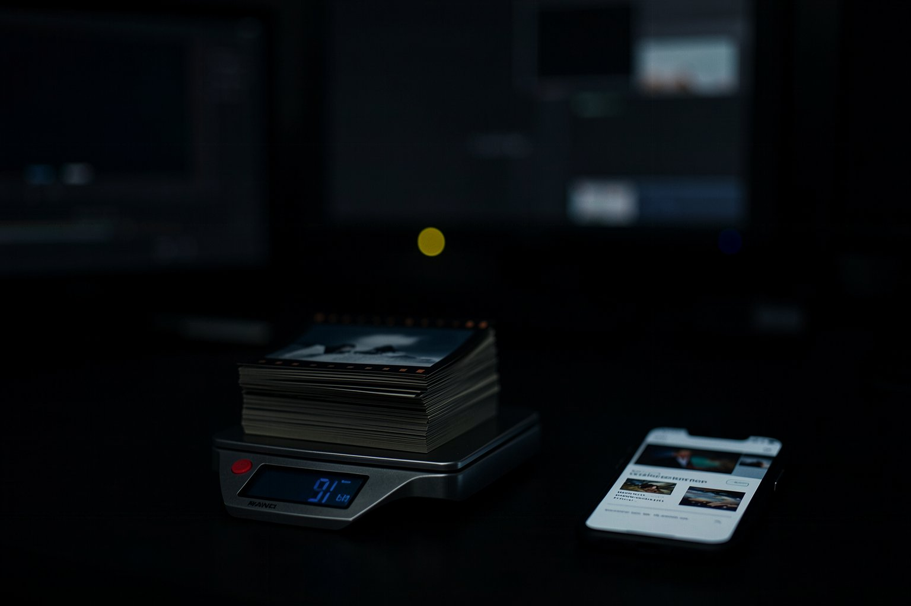

Formaçêo CARCKHÉ com IA · curso 5 de 6 · 8 aulas
Sites cARCKHÉtográficos: o vídeo vira página, e a página abre rápido
Um clipe vira quadros, a rolagem escolhe o quadro e a página parece um filme. Aqui você monta isso com agente, mede o peso, põe profundidade com Three.js, faz o filme da marca a partir do site, encadeia clipes sem corte e confere no celular e com reduzir movimento. Tudo local, sem crédito.

- 8aulas
- 25blocos de terminal testados
- 4/4portêo final
- 0crédito gasto
As aulas
Uma página de produto fictícia, a lente Aurora 35, atravessa o curso. O kit traz a página, os scripts de conferência e clipes de ensaio feitos com ffmpeg: nenhum gerador de vídeo é necessário.

Aula 1 · 15 minO que é um site cARCKHÉtográfico e quando ele vale o pesoUm site cARCKHÉtográfico parece um filme que anda com a rolagem. Por baixo, nêo há 3D nem vídeo tocando: há quadros de um clipe desenhados num canvas, um por posiçêo da rolagem. Isso pesa. Nesta aula você roda a página de exemplo do kit, mede quanto ela pesa para cada visitante e decide, com um número, se o seu produto pede uma. Aula 2 · 15 minDo vídeo aos quadros: extrair, comprimir e ordenar a sequênciaA qualidade do movimento na rolagem se decide aqui. Quadros de menos e o filme vira apresentaçêo de slides; quadros grandes demais e a página nêo abre no celular; nome sem zeros e o filme pula. Você faz um clipe de ensaio com ffmpeg a partir de uma foto, extrai todos os quadros e confere contagem, ordem e peso com um script.
Aula 2 · 15 minDo vídeo aos quadros: extrair, comprimir e ordenar a sequênciaA qualidade do movimento na rolagem se decide aqui. Quadros de menos e o filme vira apresentaçêo de slides; quadros grandes demais e a página nêo abre no celular; nome sem zeros e o filme pula. Você faz um clipe de ensaio com ffmpeg a partir de uma foto, extrai todos os quadros e confere contagem, ordem e peso com um script. Aula 3 · 18 minRolagem que controla o tempo: a skill de scroll cinemáticoO motor que liga a rolagem aos quadros tem poucas peças, e cada uma resolve um engasgo medido. Você vê as peças, troca os quadros da página do kit pelos seus da aula 2, prova pelo contrato de teste que o quadro certo aparece em cada ponto e pede a página nova à skill scroll-film-studio, do ARCKHÉ.
Aula 3 · 18 minRolagem que controla o tempo: a skill de scroll cinemáticoO motor que liga a rolagem aos quadros tem poucas peças, e cada uma resolve um engasgo medido. Você vê as peças, troca os quadros da página do kit pelos seus da aula 2, prova pelo contrato de teste que o quadro certo aparece em cada ponto e pede a página nova à skill scroll-film-studio, do ARCKHÉ. Aula 4 · 15 minProfundidade com Three.js sem travar a páginaQuadros de vídeo dêo o filme; Three.js dá uma cena desenhada em código, que muda de ângulo conforme a rolagem. O risco é a cena desenhar sem parar, mesmo parada ou fora da tela, e esquentar o celular. Aqui você mede, num Chromium sem tela, quantas vezes a cena desenha em cada situaçêo, e vê o erro comum falhar.
Aula 4 · 15 minProfundidade com Three.js sem travar a páginaQuadros de vídeo dêo o filme; Three.js dá uma cena desenhada em código, que muda de ângulo conforme a rolagem. O risco é a cena desenhar sem parar, mesmo parada ou fora da tela, e esquentar o celular. Aqui você mede, num Chromium sem tela, quantas vezes a cena desenha em cada situaçêo, e vê o erro comum falhar. Aula 5 · 18 minFilme da marca a partir do próprio siteAté aqui o vídeo virou página. Agora o caminho inverso: a página vira vídeo. O filmarca (ARCKHÉ) lê cores, fontes, logo, textos e prints de um site e monta um filme da marca em HyperFrames. Você roda o caminho inteiro contra a página do kit sem chamar modelo nenhum, com as cenas-modelo do próprio filmarca, e depois põe o filme na página.
Aula 5 · 18 minFilme da marca a partir do próprio siteAté aqui o vídeo virou página. Agora o caminho inverso: a página vira vídeo. O filmarca (ARCKHÉ) lê cores, fontes, logo, textos e prints de um site e monta um filme da marca em HyperFrames. Você roda o caminho inteiro contra a página do kit sem chamar modelo nenhum, com as cenas-modelo do próprio filmarca, e depois põe o filme na página. Aula 6 · 18 minFundo vivo: vídeo gerado dentro do siteUm filme de abertura longo nêo sai de um clipe só: sai de vários clipes curtos encadeados, cada um começando no último quadro real do anterior. O risco é o gerador cortar escondido no meio de um clipe. A skill site-movimento tem portões que pegam isso. Você roda os portões em clipes de ensaio, um contínuo e um com corte, sem gastar crédito.
Aula 6 · 18 minFundo vivo: vídeo gerado dentro do siteUm filme de abertura longo nêo sai de um clipe só: sai de vários clipes curtos encadeados, cada um começando no último quadro real do anterior. O risco é o gerador cortar escondido no meio de um clipe. A skill site-movimento tem portões que pegam isso. Você roda os portões em clipes de ensaio, um contínuo e um com corte, sem gastar crédito. Aula 7 · 16 minCelular, peso e "reduzir movimento": o site que abre rápidoMuita gente abre a página no celular em pé, com rede de celular, e algumas pessoas pediram ao sistema menos movimento. Um filme horizontal cortado na tela vertical perde o assunto; um filme que anda à força incomoda quem pediu para parar. Você confere a página no celular de 390 px, com reduzir movimento, e corta o peso do filme vertical.
Aula 7 · 16 minCelular, peso e "reduzir movimento": o site que abre rápidoMuita gente abre a página no celular em pé, com rede de celular, e algumas pessoas pediram ao sistema menos movimento. Um filme horizontal cortado na tela vertical perde o assunto; um filme que anda à força incomoda quem pediu para parar. Você confere a página no celular de 390 px, com reduzir movimento, e corta o peso do filme vertical. Aula 8 · 20 minSeu site: uma página de produto com rolagem cARCKHÉtográfica publicadaHora de juntar tudo numa página sua. Você parte do modelo do kit, troca a foto e os textos pelos do seu produto, refaz os dois filmes, passa no portêo de quatro conferências e publica no GitHub Pages. O mesmo verificador que rodou na sua máquina roda contra a URL pública: é ele que diz que está no ar.
Aula 8 · 20 minSeu site: uma página de produto com rolagem cARCKHÉtográfica publicadaHora de juntar tudo numa página sua. Você parte do modelo do kit, troca a foto e os textos pelos do seu produto, refaz os dois filmes, passa no portêo de quatro conferências e publica no GitHub Pages. O mesmo verificador que rodou na sua máquina roda contra a URL pública: é ele que diz que está no ar.
Para quem é
- 1Quem faz sites com Claude Code ou Codex e usa o terminal.
- 2Quem já tem um clipe (ou vai gerar um) e quer que ele vire a abertura de uma página.
- 3Quem fez o curso 3 (motion por código) e quer levar o movimento para o navegador.
O que você sai fazendo
- 1Transformar um clipe em quadros e ligar os quadros à rolagem.
- 2Medir o peso por visitante e decidir se a página merece o filme.
- 3Pôr profundidade com Three.js sem desenhar à toa.
- 4Conferir celular e reduzir movimento antes de publicar.
A formaçêo (6 cursos)
- 10 · Direçêo: pensar como diretor
- 21 · Geraçêo: imagem e vídeo com IA
- 32 · Produçêo: do roteiro ao filme
- 43 · Motion por código com agente
- 54 · A fábrica de vídeo com agentes
- 65 · Sites cARCKHÉtográficos (este curso)